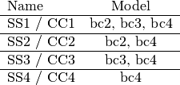

Boundary conditions¶
The classification of Som and Deb (2014) [som2014] has been used for the boundary conditions.
The simply-supported boundary conditions are:

and the clamped are:

Using the default boundary conditions¶
The analyst may set the boundary conditions specifying the parameter bc
in the ConeCyl object, using the same names specified in the
tables above:
>>> cc = ConeCyl()
>>> cc.model = 'fsdt_donnell_bc1'
>>> cc.bc = 'ss1'
Setting a different boundary condition for the bottom and top edges is
possible using a hyphen - or an underscore _ to separate them,
obtaining 'bcBot-bcTop' or bcBot_bcTop:
>>> cc.bc = 'ss1-cc1'
>>> cc.bc = 'ss1-ss2'
Note
When using boundary conditions from different types in the same
model the analyst must select the most flexible model to use,
for example when using cc.bc = 'ss1-ss2', the analyst must
use cc.model = 'fsdt_donnell_bc2', a similar one or a more
flexible model.
The model selected should be compatible with the boundary conditions that
one whishes to simulate. For example, for the SS4 or CC4 boundary
conditions, it is recommended to use the clpt_donnell_bc4 or the
fsdt_donnell_bc4 models, and so forth.
The more flexible models can be used to simulate the more rigid boundary conditions, since elastic constraints are ajusted in order to provide the right set of boundary conditions, as shown in the table above. The table below shows the models that can be used for each boundary condition:

Note that the models bc4 can be used for all the cases listed above. It
is expected that more terms are required in the approximation when
a model from another group is used.
Using arbitrary boundary conditions¶
When no value is given to the parameter bc the model will run by
default with the SS1 boundary conditions. The analyst must change
the elastic stiffnesses by changing the following parameters:
>>> cc = ConeCyl()
>>> cc.kuBot
>>> cc.kuTop
>>> cc.kuBot
>>> cc.kvTop
>>> cc.kvBot
>>> cc.kphixTop
>>> cc.kphixTop
In order to achieve the desired results.
The other stiffnesses kwBot, kwTop, kphitBot and kphitTop
will affect only models clpt_donnell_bcn and
fsdt_donnell_bcn (or the counterparts that use the Sander’s equations).